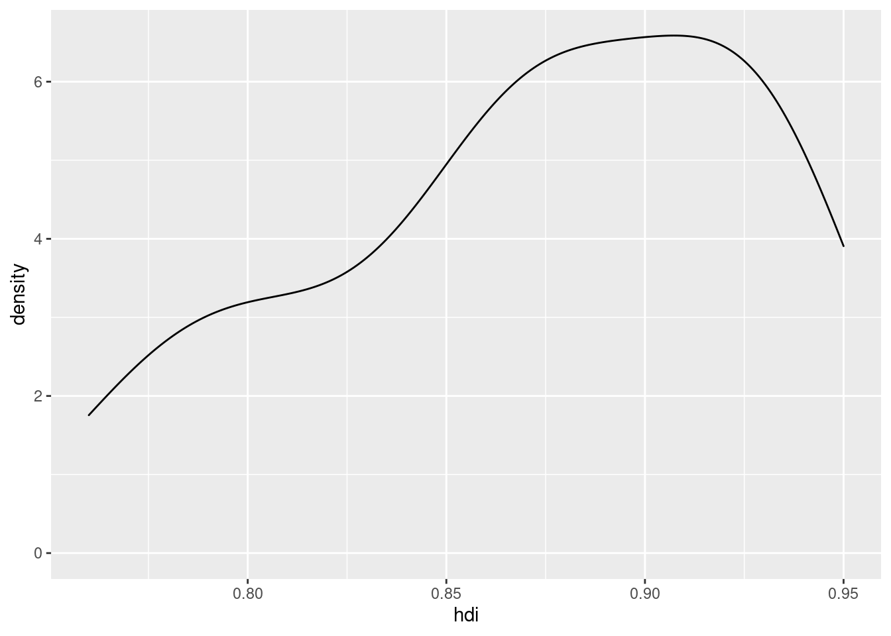

Vizaulizace dat - Logika ggplot2 a typy grafů
V této sekci se zaměříme na jednu z nejdůležitějších částí analýzy dat a to jejich vizualizace. K tomu využijeme balíček ggplot2.
Logika balíčku ggplot2
Vytváření grafů pomocí ggplot2 probíhá po vrstvách. Vytváření grafů probíhá formou nanášení vrstev a jejich upravování. Každá část grafu je součástí vrstvy a každou vrstvu je možné upravovat nezávisle na ostatních:

Kombinací všech vrstev získámí finální graf:

Rychlé vytváření grafů
Pokud si chceme data rychle graficky prohlédnou, a nepořebujeme řešit vzhled, můžeme využít využít funkci qplot(). Tato funkce potřebuje jednak specifikovat, jaké proměnné mají být použity na jednotlivých osách grafu (argumenty x a y) a dále dataframe, ve kterou se proměnné nachází (argument data). Tato funkce se pokusí odhadnout, jaký typ graf je pro naše vhodný, na základě typů proměnných. Například aplikace qplot() na kategoriální proměnnou vede ke sloupcovému grafu:
qplot(x = maj_belief, data = countries)
Naopak dvě intervalové proměnné vedou ke bodovému grafu (scatterplotu):
qplot(x = hdi, y = life_exp, data = countries)
Podrobnější vytváření grafů
Mapování dat na graf a definování dimenzí grafu
Pokud chceme vytvářet komplexnější nebo vizuálně atraktivnější grafy, vyplatí se vytvořit každou vrstvu zvlášť. Centrální je pro vytváření grafů pomocí balíčku ggplo2 je funkce aes(). Funkce aes(), zkratka pro aesthetics, mapuje data na objekty v grafu. Mapováním je myšleno propojením dat, tedy konkrétních hodnot v dataframe, s jednotlivými součástmi grafu. Například funkce aes(x = hdi, y = life_exp) spojí osu x s proměnnou hdi a osu y s proměnnou life_exp.
Každý ggplot2 graf začíná funkcí ggplot(). Funkce ggplot() definuje dimenze grafu a představuje jeho nejnižší vrstvu. Je v ní třeba definovat dva argumenty: mapping, která je spojená s funkcí aes() a data, které definuje s jakým dataframem pracujeme. Například pokud je naším cílem vytvořit graf pro proměnné hdi a life_exp:
countries %>% ggplot(aes(x = hdi, y = life_exp))
Geomy (geoms)
Všimněme si, že graf, který jsem udělali výše sice má popisky os, ale jinak je prázdný. To proto, že jsem ještě R neřekli, jak mají být data graficky reprezentována.
Objekty které v ggplot2 reprezentují data, se nazývají geomy (geoms). Ke grafu je můžeme připojit pomocí funkce, která má obecný tvat geom_nazev(). Jeden graf může obsahovat více než jeden geom. Není například neobvyklé mít bodovy graf (scatterplot) a proložený regresní přímkou.
Geomů existuje celá řada, je dokonce i možné si vytvářet vlastní. Pro většinu grafů nám ale poslouží několik základních:
| geom | popis |
|---|---|
geom_point() |
Bod, zpravidla ve scatterplotu |
geom_col() |
Sloupec ve sloupcovém grafu |
geom_hist() |
Sloupec ve scatterplotu |
geom_boxplot() |
Boxplot |
geom_line() |
Křivka |
geom_density() |
Křivka grafu hustoty |
geom_smooth() |
Regresní křivka/přímka |
geom_vline() |
Vertikální přímka |
geom_hline() |
Horizontální přímka |
geom_abline() |
Přímka s volitelným počátkem a sklonem |
geom_text() |
Text |
Popíšeme si využítí každého z nich.
Typy grafů
Bodový graf (Scatterplot)
Bodový graf je možné vytvořit přidáním funkce geom_point() k objektu vytvořeného pomocí ggplot():
countries %>% ggplot(aes(x = hdi, y = life_exp)) +
geom_point()
Pokud bychom chtěli body pro lepší identifikaci nahradit textem, je třeba k funkci aes() přidat argument label, který definuje textové popisky a využít funkce `geom_text(). Například v našem grafu můžeme využít ISO kódy jednotlivých zemí:
countries %>% ggplot(aes(x = hdi, y = life_exp, label = code)) +
geom_text()
Regresní přímky a křivky
Pro vizualizaci jednoduchých regresních modelů je možné využít funkci geom_smooth(). Tu je často možné kombinovat s funkcí geom_point():
countries %>% ggplot(aes(x = hdi, y = life_exp)) +
geom_point() +
geom_smooth()## `geom_smooth()` using method = 'loess' and formula 'y ~ x'
Funkce geom_smooth() ve svém výchozím nastavení využívá takzvaný locally estimated scatterplot smoothing, známy pod zkratkou loess (argument method = "loess") a přidá 95% intervaly spolehlivosti (argument level = 0.95). Pokud bychom chtěli klasickou lineární regresi, odhadnutou pomocí metody nejmenších čtverců, změníme argument method na method = "lm". K odebrání intervalů spolehlivosti slouží argument se = FALSE:
countries %>% ggplot(aes(x = hdi, y = life_exp)) +
geom_point() +
geom_smooth(method = "lm", se = FALSE)## `geom_smooth()` using formula 'y ~ x'
Můžeme také specifikovat jinou podobu modelu než je přímka, pomocí argumentu formula. Výchozí nastavení definuje model jako y ~ x, tedy předpokládá lineární vztah mezi proměnou na ose x a y. Pokud bychom místo přímky chtěli například kubickou regresi:
countries %>% ggplot(aes(x = hdi, y = life_exp)) +
geom_point() +
geom_smooth(method = "lm", se = FALSE, formula = y ~ poly(x, 3))
Sloupcový graf (barplot)
Pro jednorozměrnou vizualizaci kategorických proměnných můžeme využít starý známy sloupcový graf. Rychlou verzi sloupcového grafu můžeme vytvořit pomocí namapování proměnné na osu x pomocí funkc aes() a využití funkce geom_bar():
countries %>% ggplot(aes(x = postsoviet)) + geom_bar()
Tento graf nám ukáže absolutní četnosti kategorií, v tomto případě, proměnné postsoviet. Tento způsob vytváření sloupcové grafu je ale nešikovný, pokud bychom chtěli na ose y mít jiné hodnoty, než absolutní četnosti. V mnoha případech se proto vyplatí spočítat hodnoty pro osu y dopředu. K tomu je možné využít funkce count() (která je sama kombinací funkcí group_by() a summarise()). Pokud bychom si například chtěli spočítat počet zemí v každé kategorii proměnné postsoviet:
countries %>% count(postsoviet)## postsoviet n
## 1 no 21
## 2 yes 16Tímto způsobem získáme dataframe s dvěmi proměnnými. První proměnná obsahuje názvy kategorií a druhá proměnná, zvaná n, jejich absolutní frekvenci. Z tohoto dataframu můžeme vytvořit sloupcový graf namapováním proměnné postsoviet na osu x a proměnné n na osu y. Následně přidáme funkci geom_col(), cože je obecná funkce pro zobrazení dat jako sloupce:
countries %>% count(postsoviet) %>%
ggplot(aes(x = postsoviet, y = n)) +
geom_col()
Jak vidíme, tento graf je shodný s předchozím. Výhodou tohoto delšího přístupu, že můžeme lépe kontrolovat hodnoty na ose y. Pokud bychom například chtěli relativní četnosti (tj. procenta), můžeme si nejdříve vytvořit novou proměnnou freq pomocí funkce mutate() a poté ji namapovat na osu y:
countries %>% count(postsoviet) %>%
mutate(freq = n/sum(n)) %>%
ggplot(aes(x = postsoviet, y = freq)) +
geom_col()
Proměná freq je definované jako n/sum(n), tedy počet pozorování v dané kategorii děleno celkovým počtem pozorování. Jak můžeme vidět, zhruba 40 % zemí v našich datech byly součástí Východního bloku.
Obdobným způsobem můžeme na osu y dosazovat další statistiky. Co kdybychom chtěli porovnat průměrný Index lidského rozvoje zemí bývalého Východního a Západního bloku? Nejdříve je nutné vytvořit dataframe, který bude obsahovat průměrnou hodnotu hdi pro každou kategorii proměnné postsoviet:
countries %>% group_by(postsoviet) %>%
summarise(mean_hdi = mean(hdi, na.rm = TRUE) )## `summarise()` ungrouping output (override with `.groups` argument)## # A tibble: 2 x 2
## postsoviet mean_hdi
## <chr> <dbl>
## 1 no 0.898
## 2 yes 0.839V kódu výše jsme nejdříve využili funkce group_by(), abychom řekli R že všechny následující funkce má aplikovat pro každou kategorii postsoviet zvlášť. Poté jsme pomocí kombinace funkcí summarise() a mean() spočítali průměrnou hodnotu hdi pro každou skupinu zemí a výsledek uložili do proměnné s názvem hdi_mean.
Teď už jen stačí namapovat proměnnou postsoviet na osu x a proměnnou hdi_mean na osu y. Data zobrazíme jako sloupce pomocí již známe funkce geom_col(). Jak vidíme, země bez sovětské minulosti mají v průměru o něco vyšší index lidského rozvoje:
countries %>% group_by(postsoviet) %>%
summarise(mean_hdi = mean(hdi, na.rm = TRUE) ) %>%
ggplot(aes(x = postsoviet, y = mean_hdi)) +
geom_col()## `summarise()` ungrouping output (override with `.groups` argument)
Boxplot
Přestože, jak jsme si ukázali výše, můžeme sumarizovat intervalé proměnné napříč skupinami pomocí sloupcových grafů, jak jsme si ukázali výše, nejedná se příliš efektivní postup. Tyto grafy totiž zobrazují pouze střední hodnoty proměnné (např. pouze průměr hdi jednotlivých kategorií postsoviet), ale ne jejich variabilitu. Ta je přitom neméně důležitou statistikou. Pro vizualizaci intervalových proměných, ať už napříč daty jako celkem nebo po skupinách, je proto lepší využít boxplotu. K tomuto cíli slouží funkce geom_boxplot():
countries %>% ggplot(aes(x = postsoviet, y = hdi)) +
geom_boxplot()
Jak vidíme, postsovětské země mají nejen zpravidla nižší hodnotu Indexu lidského rozvoje, ale existují mezi nimi i o něco větší rozdíly. Délku fousů můžeme upravovat pomocí argumentu coef. Standardní délka je 1.5 násobek IQR (tedy coef = 1.5)
Histogram a graf hustoty (density plot)
Pro jednorozměrnou vizualizaci intervalových proměnných máme několik možností. První z nich je klasický histogram, tedy sloupcový graf zobrazující kategorizovanou verzi intervalové proměnné. K vytvoření histogramu namapujeme proměnnou na osu x a využijeme funkci geom_histogram():
countries %>% ggplot(aes(x = hdi)) +
geom_histogram()## `stat_bin()` using `bins = 30`. Pick better value with `binwidth`.
Graf výše zobrazuje rozdělení proměnné hdi, seskupené podle výchozího nastavení do 30 intervalů. Počet intervalů můžeme určit pomocí argumentu bins. Pokud bychom chtěli pouze 10 intervalů:
countries %>% ggplot(aes(x = hdi)) +
geom_histogram(bins = 10)
Alternativně můžeme místo celkového počtu intervalů určit šířku jednoho intervalu, a to pomocí argumentu binwidth. Například pokud bychom chtěli, aby každý interval měl šířku 0.05:
countries %>% ggplot(aes(x = hdi)) +
geom_histogram(binwidth = 0.05)
Alternativou pro histogram, jehož vzhled závísí na arbitrární volbě počtu intervalů, je graf hustoty. Jeho vytvoření je velice podobné histogramu, ale funkci geom_histogram() nahradíme funkcí geom_density():
countries %>% ggplot(aes(x = hdi)) +
geom_density()
Graf hustoty se hodí zejména pro větší data (u malých datasetů může být křivka “krkolomná”), lépe ale popisuje rozdělení opravdu spojitých proměnných. V našem případě například vidíme, že nejvíce zemí má hodnotu hdi kolem 0.9 a že rozdělení proměnné je negativně šikmé.
Dimenze barvy (color a fill)
Do teď jsme pracovali pouze s dvěma dimenzemi, osou x a osou y. Data je ale možné namapovat na graf i jinými způsoby. Jednou z oblíbených “dimenzí” je barva. Ta umožňuje zobrazit v dvourozměrném grafu tři proměnné najednou.
ggplot2 umožňuje mapovat barvu dvěma způsoby. Barva obrysu objektu je určená pomocí argumentu color a barva výplně objektu je určena pomocí argumentu fill. Například pro nastavení barvy obrysu sloupců ve sloupcovém grafu:
countries %>% ggplot(aes(x = postsoviet)) +
geom_bar(color = "orange")
V praxi ale nás ale u sloupcových grafých zajímá spíše barva výplně sloupce, použijeme tedy argument fill:
countries %>% ggplot(aes(x = postsoviet)) +
geom_bar(fill = "orange")
Barvy v bodovém grafu
v bodovém grafu můžeme pomocí různých barev rozlišit různé kategorie určité proměnné. Toho je možné docílit pomocí namapování barev na hodnoty proměnné v rámcí funkce aes(). Například pro rozlišení postsovětských a západních zemí v našem bodobém grafu hdi a life_exp:
countries %>% ggplot(aes(x = hdi, y = life_exp, color = postsoviet)) +
geom_point()
Barvy ve sloupcovém grafu
U sloupcových grafů je možné využít barvu několika způsoby. Konkrétní podobu grafu můžeme určit pomocí argumentu position. Prvním způsobem je takzvaný stacked bar, kde jsou jednotlivé kategorie naskládané na sebe (toto je výchozí nastavení). Ten můžeme vytvořit pomocí argumentu position = "stack" uvnitř funkce geom_bar(). Z následujícího grafu můžeme například vidět, že v našich datech převažují západní země a že v obou kategoriích (jak u západních, tak postsovětských zemí) je většina členem Evropské únie:
countries %>% ggplot(aes(x = postsoviet, fill = eu_member)) +
geom_bar(position = "stack")
Alternativou k stacked barplotu je filled barplot. Tento graf vypadá velmi podobně, ale na ose y je relativní frekvence. Nevyčteme tedy z něj velikost jednotlivých skupin na ose x, ale jo možné lépe porovnat složení skupin. Filled barplot získáme pomoci argumentu position = "fill":
countries %>% ggplot(aes(x = postsoviet, fill = eu_member)) +
geom_bar(position = "fill")
Poslední možností je grouped/dodged barplot, ve kterém jsou sloupce vedle sebe místo na sobě. Tento graf získáme pomocí argumentu position = "dodge":
countries %>% ggplot(aes(x = postsoviet, fill = eu_member)) +
geom_bar(position = "dodge")
Barvy u ostatních typů grafů
U ostatních typů grafu (ať už se jedná o histrogram, boxplot nebo jiný) funguje mapování barev stejné u těch výše zmíněných.
Tvar (shape) a velikost (size)
Kromě dvou a barev je možné využít ještě dimenzí tvaru a velikosti. Tyto dvě dimenze jsou víceméně výlučně využívané u bodových grafů. Na proměnné se mapují obdobně jako ostatní dimenze, tedy pomocí argumentů shape a size v rámci funkce aes().
Dimenze tvaru se hodí pro kategoriální proměnné, obodobně jako barva. Napříkad země bývalého Západního a Východního bloku můžeme rozlišit tvarem bodu:
countries %>% ggplot(aes(x = hdi, y = life_exp, shape = postsoviet)) +
geom_point()
Velikost umožňuje vizualizaci i spojitých proměnných Pro vizualizaci vztahu nejen hdi a life_exp, ale i gdp:
countries %>% ggplot(aes(x = hdi, y = life_exp, size = gdp)) +
geom_point()## Warning: Removed 2 rows containing missing values (geom_point).
Kombinace dimenzí
Jednotlivé dimenze lze kombinovat navzájem. Teoreticky je tedy možné v jednom dvourozměrném grafu zobrazi vztahy mezi a ž pěti proměnnými, dvěmi kategoriálními (dimenze barvy a tvaru) a třemi intervalovými (osa x, osa y a velikost). Ovšem takový graf je už většinou dost nepřehledný:
countries %>% ggplot(aes(x = hdi, y = life_exp, size = gdp, color = eu_member, shape = postsoviet)) +
geom_point()## Warning: Removed 2 rows containing missing values (geom_point).